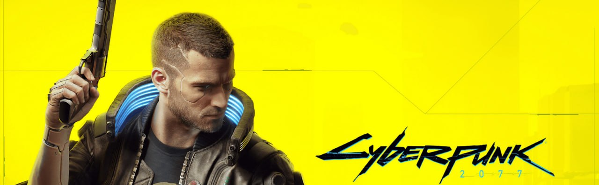
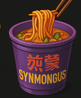

Страва SYNMONGUS

ПРОТЕЇНОВИЙ
СУПЕРФУД
З НЕВІДОМОЮ
ТЕКСТУРОЮ
SYNMONGUS — це загадкова страва, яка викликає підозру й апетит одночасно. Густий біомасовий крем із високим вмістом білка — улюблена їжа найвідчайдушніших мешканців нижніх рівнів. Дехто каже, що це штучне м’ясо, інші — що це грибкова культура з синтетичним підсиленням. Одне точно: SYNMONGUS не для слабких.